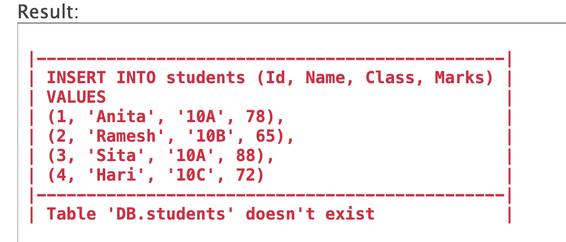
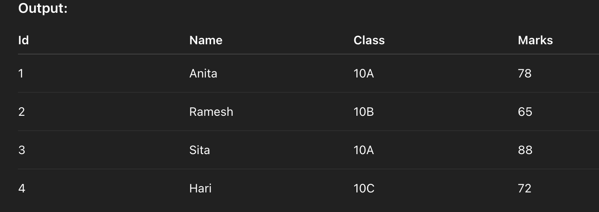
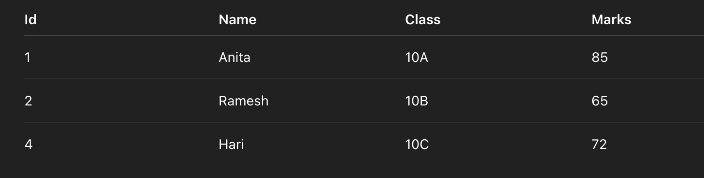

A database is an organized collection of data that is stored and accessed electronically. It allows data to be efficiently retrieved, managed, and updated. Databases are used in various applications, from websites and mobile apps to banking systems and school management software.
A Database Management System (DBMS) is software that interacts with users, applications, and the database itself to capture and analyze data. It helps users create, manage, and manipulate databases without needing to know how the data is physically stored. Examples of DBMS: MySQL, Oracle, Microsoft SQL Server, PostgreSQL, SQLite, etc.
This model organizes data in a tree-like structure with a single root and multiple levels of related records.
Advantages:This model represents data as records connected through links (pointers), allowing many-to-many relationships.
Advantages:Data is organized in tables (relations) with rows and columns. Most widely used model today.
Advantages:Data is represented as objects, similar to object-oriented programming languages.
Advantages:
A relational database is a type of database that stores data in tables (also called relations), made up of rows and columns. Each row is a record, and each column is a field or attribute. Tables can be linked using foreign keys to establish relationships between data.
Relational databases use SQL (Structured Query Language) for storing, updating, and querying data.
Examples: MySQL, PostgreSQL, Oracle, SQL Server, SQLite.
| Aspect | Relational Database | Hierarchical Model | Network Model | Object-Oriented Model |
|---|---|---|---|---|
| Structure | Data is stored in tables (rows & columns). | Organized in a tree-like hierarchy. | Uses records and links (pointers). | Stores data as objects (like in OOP). |
| Relationships | Uses foreign keys to relate tables. | One-to-many (parent-child). | Many-to-many using links. | Relationships through objects and classes. |
| Flexibility | Highly flexible and scalable. | Rigid and hard to modify. | Moderately flexible but complex. | Flexible for complex data, but less standard. |
| Query Language | Uses SQL. | Uses navigational access paths. | Uses navigational methods with sets. | No standard; uses OOP methods. |
| Usage | Most widely used today. | Used in early mainframe systems. | Used in early complex systems. | Used in multimedia, AI, and CAD apps. |
Data Redundancy refers to the unnecessary duplication of data within a database or data storage system. It occurs when the same piece of data is stored in multiple places, which can lead to inconsistency, increased storage costs, and difficulty in maintaining data.
How DBMS Reduces Data Redundancy:
| Aspect | Centralized Database System | Distributed Database System |
|---|---|---|
| Location | All data is stored at a single central location. | Data is stored across multiple physical locations or systems. |
| Access Speed | Faster access within the local system but slower for remote users. | Provides faster access for users closer to a local database server. |
| Reliability | If the central server fails, the entire system becomes unavailable. | More reliable as failure in one site doesn’t affect others entirely. |
| Cost | Cheaper to set up and maintain initially. | More expensive due to network setup, synchronization, and maintenance. |
| Data Sharing | Difficult to share data across geographically distant locations. | Data can be shared more easily among multiple locations. |
| Scalability | Limited scalability. | Highly scalable by adding more nodes or sites. |
A Database Administrator (DBA) is a person responsible for managing, maintaining, and securing a database system. The DBA ensures that the database is available, efficient, and secure for use by applications and users.
Normalization is the process of organizing data in a database to eliminate redundancy and improve data integrity. It involves dividing large tables into smaller ones and defining relationships between them.
A table is in 1NF if:
Example:
| StudentID | Name | Subjects |
|---|---|---|
| 1 | Alice | Math, English |
Not in 1NF because "Subjects" has multiple values.
Converted to 1NF:
| StudentID | Name | Subject |
|---|---|---|
| 1 | Alice | Math |
| 1 | Alice | English |
A table is in 2NF if:
Example:
| StudentID | CourseID | StudentName | CourseName |
|---|---|---|---|
| 1 | 101 | Alice | Math |
Issue: StudentName depends only on StudentID, not the full composite key.
Convert to 2NF:
| StudentID | StudentName |
|---|---|
| 1 | Alice |
| CourseID | CourseName |
|---|---|
| 101 | Math |
| StudentID | CourseID |
|---|---|
| 1 | 101 |
A table is in 3NF if:
Example:
| StudentID | StudentName | Department | HOD |
|---|---|---|---|
| 1 | Alice | Science | Dr. Roy |
Problem: HOD depends on Department, not on StudentID (transitive dependency).
Convert to 3NF:
| StudentID | StudentName | Department |
|---|---|---|
| 1 | Alice | Science |
| Department | HOD |
|---|---|
| Science | Dr. Roy |
Normalization improves the structure of a database by reducing redundancy, enhancing consistency, and simplifying data maintenance through structured decomposition of tables.
A primary key is a field (or combination of fields) that uniquely identifies each record in a table. It must contain unique values and cannot have NULLs.
Example:
| StudentID (Primary Key) | Name | Age |
|---|---|---|
| 1 | Alice | 18 |
| 2 | Bob | 19 |
A foreign key is a field in one table that refers to the primary key of another table. It is used to create a relationship between two tables.
Example:
| CourseID | CourseName | StudentID (Foreign Key) |
|---|---|---|
| 101 | Math | 1 |
| 102 | English | 2 |
Here, StudentID in the Course table is a foreign key referencing the Student table's primary key.
A candidate key is a field (or combination of fields) that can uniquely identify a record. A table can have multiple candidate keys, but only one is chosen as the primary key.
Example:
| StudentID | Phone | |
|---|---|---|
| 1 | alice@email.com | 9876543210 |
| 2 | bob@email.com | 9823456789 |
Here, StudentID, Email, and Phone are all candidate keys, but only one is selected as the primary key.
SQL (Structured Query Language) is a standard programming language used to manage and manipulate relational databases. It is used to insert, retrieve, update, and delete data in databases.
CREATE – To create a table or databaseALTER – To modify a tableDROP – To delete a table or databaseSELECT – Retrieve dataINSERT – Add new recordsUPDATE – Modify existing dataDELETE – Remove recordsGRANT – Give accessREVOKE – Remove accessCOMMIT – Save changesROLLBACK – Undo changesSUM() – Adds valuesAVG() – Average of valuesCOUNT() – Counts rowsMAX() / MIN() – Highest or lowest valueUPPER(), LOWER() – Change caseCONCAT() – Combine stringsLENGTH() – Length of stringNOW() – Current date/timeCURDATE() – Current dateDATEDIFF() – Difference between datesSQL is the backbone of database interaction and is essential for working with relational databases effectively.
CREATE TABLE students (
Id INT PRIMARY KEY,
Name VARCHAR(50),
Class VARCHAR(20),
Marks INT
);
INSERT INTO students (Id, Name, Class, Marks)
VALUES
(1, 'Anita', '10A', 78),
(2, 'Ramesh', '10B', 65),
(3, 'Sita', '10A', 88),
(4, 'Hari', '10C', 72);

SELECT * FROM students;

UPDATE students SET Marks = 85 WHERE Name = 'Anita';
DELETE FROM students
WHERE Id = 3;

A centralized repository that stores metadata — data about the database's structure, including information about tables, columns, data types, constraints, and relationships.
A unique identifier for each record in a database table. It ensures that no two rows have the same primary key value, thus uniquely identifying each record.
A logical connection between two or more tables in a database, often established through keys (primary and foreign keys), representing how data in one table relates to data in another.
A subset of SQL commands used to retrieve, insert, update, and delete data in a database. Examples include SELECT, INSERT, UPDATE, and DELETE.
A standardized programming language used to manage and manipulate relational databases through commands such as querying, updating, and defining data.
The accuracy, consistency, and reliability of data stored in a database, maintained through rules, constraints, and validations to prevent data corruption.
A subset of SQL commands used to define or modify the structure of database objects like tables, indexes, and schemas. Examples include CREATE, ALTER, and DROP.
Measures and controls implemented to protect data from unauthorized access, breaches, or corruption, ensuring confidentiality, integrity, and availability.
A complete system consisting of the database itself, the Database Management System (DBMS) software, and the associated applications that interact with the database.